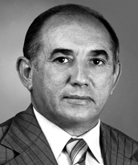

Nascido em Juazeiro do Norte-CE, 1º de agosto de 1928, Siqueira Campos foi o principal líder da luta pela criação do Estado do Tocantins, sendo o autor da emenda à Constituição de 1988 que garantiu a separação do norte de Goiás e a criação do novo Estado. Eleito deputado federal por cinco mandatos, defendeu o Tocantins ao longo de quase duas décadas no Congresso. Em 1988, com a aprovação da nova Constituição, tornou-se o primeiro governador do Tocantins, cargo que ocupou por quatro mandatos (1989–1990, 1995–1998, 1999–2002 e 2011–2014).
Fundou a capital Palmas em 1989, idealizando e liderando sua construção, bem como a implantação das estruturas administrativas e dos três poderes do novo Estado. Entre suas obras mais emblemáticas estão a Praça dos Girassóis, o Aeroporto de Palmas, a Ponte da Integração (atual ponte Governador José Wilson Siqueira Campos), o Hospital Geral de Palmas, o Projeto Orla, entre outras. Faleceu 4 de julho de 2023, sua vida pública foi marcada por uma luta incansável pela autonomia política, econômica e social do norte goiano. Por muitos, é considerado o “pai do Tocantins”.
